UM CLÁSSICO DA BARBIE
Uma história de dança, amizade, coragem e magia protagonizada por doze princesas.
Conheça o filmeCONHEÇA A HISTÓRIA
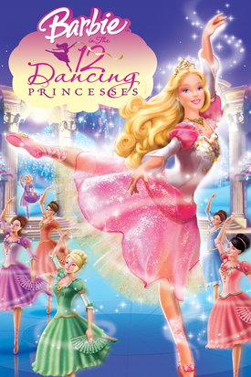
Barbie interpreta a princesa Genevieve, uma das doze filhas do rei Randolph. As princesas são apaixonadas por dança e vivem juntas no reino de seu pai.
Quando a tia Rowena chega ao castelo para ajudar a família, ela começa a tentar controlar a vida das princesas. Porém, Genevieve e suas irmãs descobrem uma passagem secreta que leva a um mundo mágico.
Juntas, as princesas precisam usar sua união, coragem e amor pela dança para salvar seu reino.
ASSISTA
PERSONAGENS
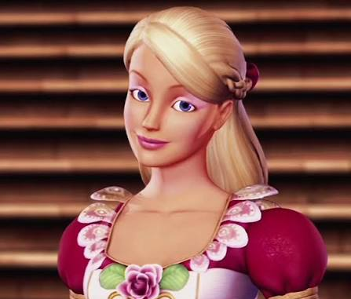
A protagonista da história. Genevieve é uma princesa corajosa, determinada e apaixonada pela dança.
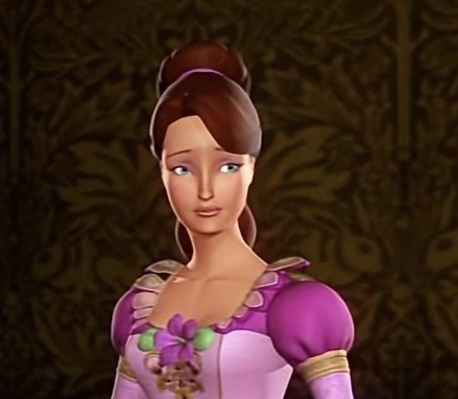
A irmã mais velha das princesas. É responsável, madura e costuma ajudar a cuidar de suas irmãs.
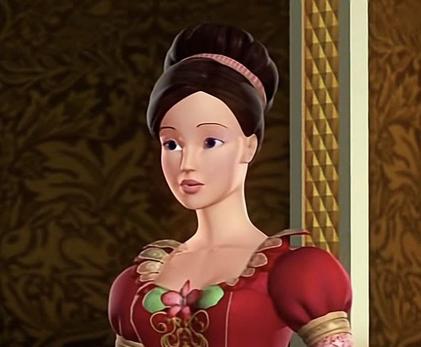
Uma das princesas que participa das aventuras e demonstra muita energia e determinação.
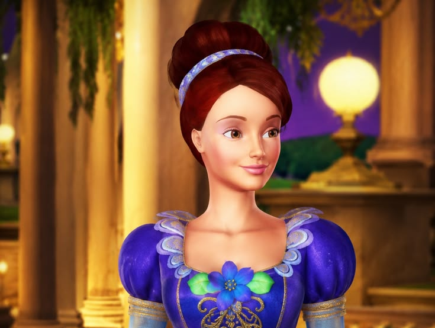
Inteligente e apaixonada por livros, Courtney gosta de aprender e descobrir novas coisas.
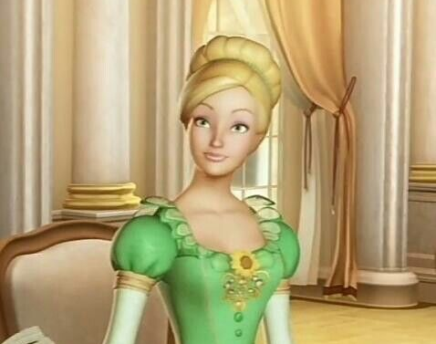
Divertida e esportiva, Delia gosta de atividades que envolvem movimento e aventura.
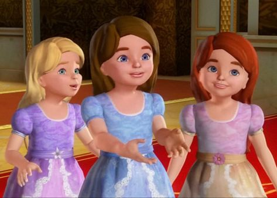
São as três filhas mais novas do Rei Randolph e da Rainha Isabelli: Janessa, Kathleen e Lacey.
IMAGENS DO FILME
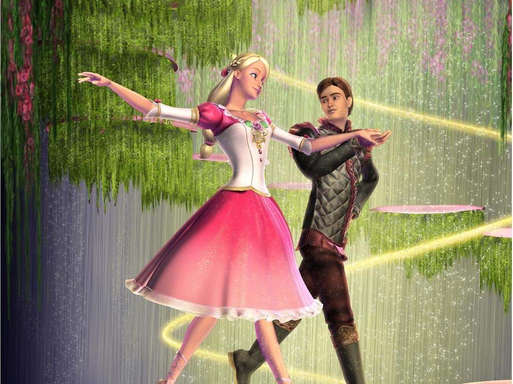
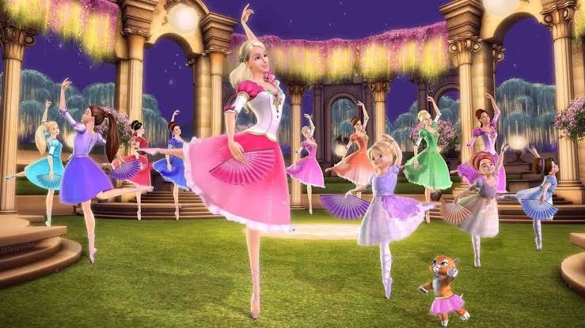
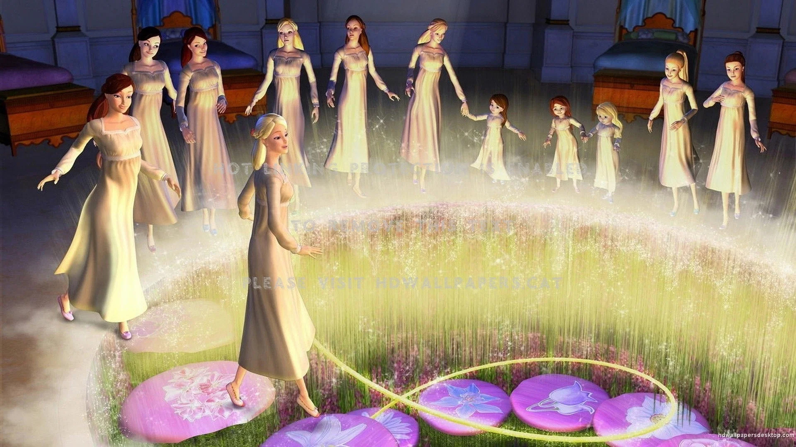
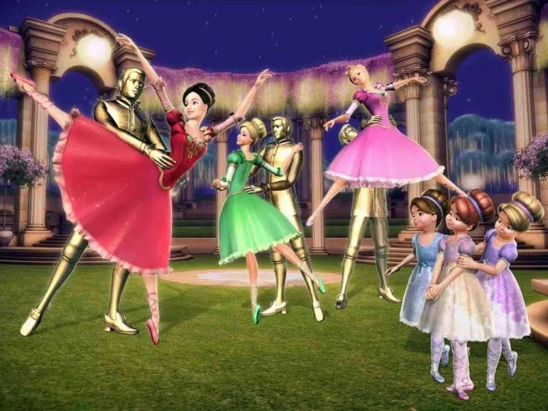
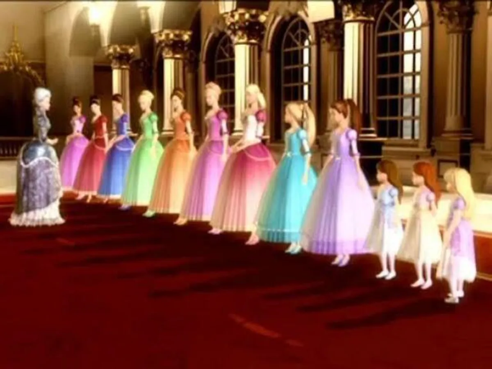
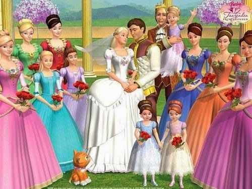
VOCÊ SABIA?
Toda a dança que você vê no filme foi baseada em movimentos reais de bailarinos profissionais. A Mattel utilizou a tecnologia de captura de movimentos (motion capture) com membros do prestigiado New York City Ballet.
Se você prestar atenção ao nome das 12 princesas, vai notar um padrão inteligente. Elas foram nomeadas seguindo a ordem alfabética exata de suas idades.
A belíssima trilha sonora do filme não foi criada digitalmente por sintetizadores comuns. Ela foi gravada pela renomada Orquestra Sinfônica de Londres e incorpora famosas composições de Mendelssohn.
Cada uma das 12 princesas possui uma pedra preciosa e uma flor favorita que as representam. Esses detalhes não eram apenas estéticos: as flores estavam gravadas no chão do quarto delas e serviam como as "teclas" do quebra-cabeça que abria o portal para o mundo mágico.
QUER COMPARTILHAR?